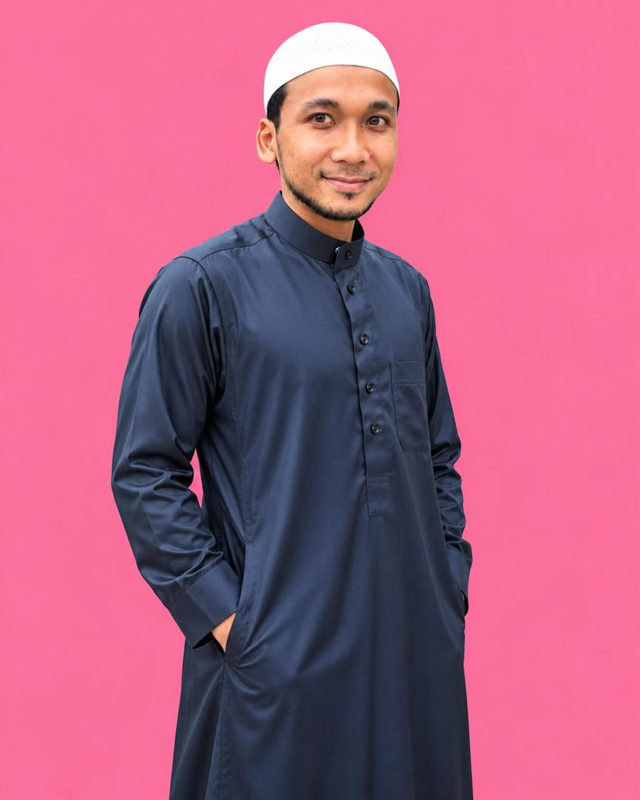
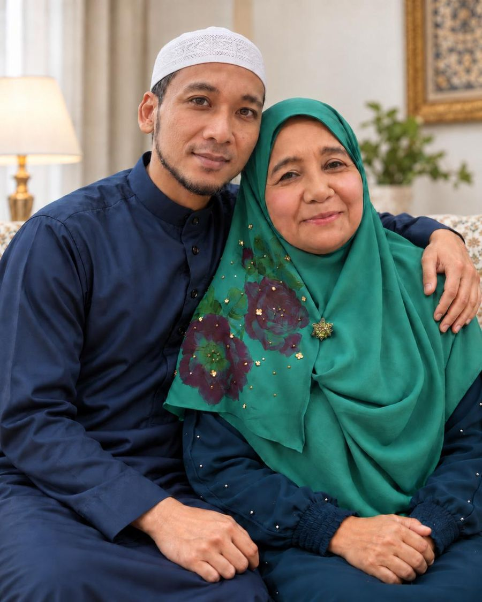
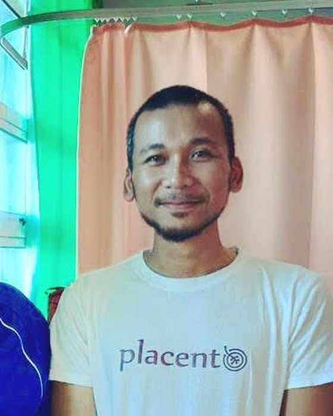
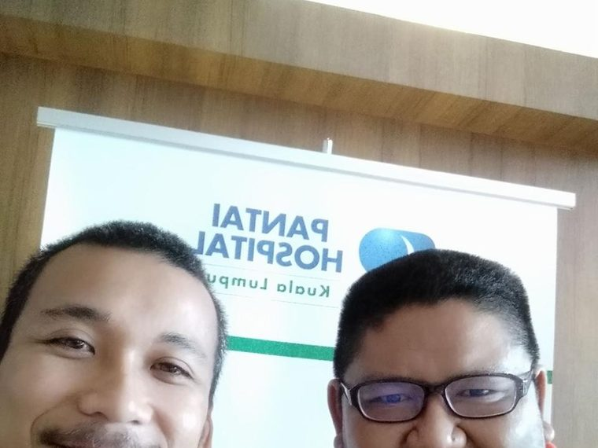
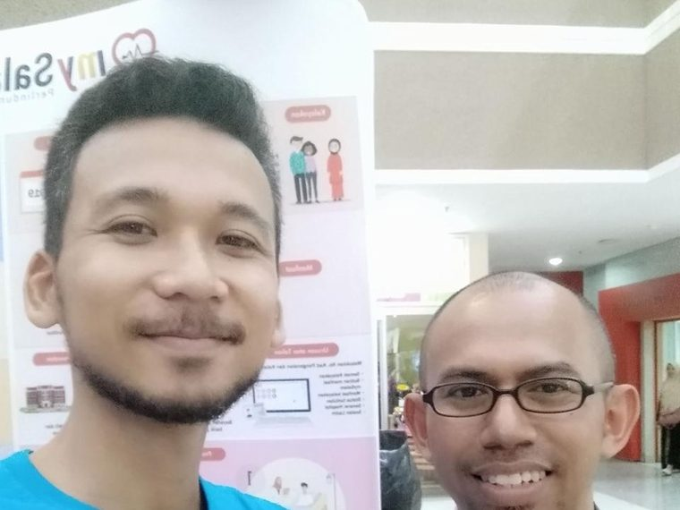

Masyarakat sambut kelahiran bayi. Kita lupa sambut kelahiran seorang ibu dan ayah.
Tak perlu sempurna. Cukup bersedia.
5,000+ keluarga diurus · 9 tahun Placento · Anak seorang bidan

Itu bunyi yang saya kenal sejak kecil. Emak saya, Hajjah Rafeah, seorang bidan. Empat puluh tahun lebih dia sambut bayi, urus uri, sampai ke pagi.

Saya besar dalam suasana itu. Lepas tu ke Al-Azhar, belajar pengajian Islam dan bahasa Arab. Balik, jadi ustaz. Sembilan tahun kebelakangan ini pula, saya uruskan uri dan urusan kelahiran untuk lebih 5,000 keluarga.

Tapi ada satu peristiwa yang mengubah cara saya fikir. Anak pertama saya lahir dengan komplikasi jantung berlubang, ASD dan VSD. Lapan bulan kami berkampung dalam wad.
Dalam tempoh itu baru saya sedar. Orang ramai datang sambut bayi. Tapi jarang yang datang sambut ibu dan ayahnya.
Sejak hari itu, kerja saya bukan sekadar uruskan uri. Kerja saya: bantu ibu dan ayah bersedia, sebelum anak lahir.
Kalau awak mula baca sebab nak suami lebih hadir di rumah, awak tak tersalah tempat. Ramai yang mula dari sini. Hantar satu post pada dia, atau baca berdua. Perubahan biasanya mula dari seorang yang peduli.
Hantar pada suamiBila bercakap pasal kepercayaan, lebih baik tunjuk angka daripada bercerita panjang.
Kerja ni dibuat di wad, di rumah orang, di mana-mana keluarga perlukan.


Pilih pintu yang paling dekat dengan keadaan awak sekarang.
Bimbingan dan bahan bacaan untuk awak yang nak bersedia sebelum, semasa dan selepas kelahiran.
Mula belajarMadu dan pemakanan sunnah untuk keluarga. Ilmu dulu, baru pilih produk.
Tanya pasal maduUntuk awak yang nak bina pendapatan sampingan dengan membawa produk kesihatan keluarga.
Kenal teamEbook percuma. 7 bab, 114 nama dengan makna dan panduan memilih. 60 muka surat, disusun supaya senang dibaca walaupun awak sibuk.
Download ebook percumaPercuma. Tiada bayaran, tiada iklan.
"Ustaz Basri dan Placento sangat memudahkan urusan penanaman uri untuk kami yang duduk di bandar. Dah dua kali guna khidmat dari anak pertama dan kini anak kedua. Hassle free, ambil uri hari yang sama saya bersalin."
"Mesej pukul 9 pagi, pukul 10 dah collect, petang pukul 3 dah tanam siap dengan video. 100% efficient."
"Terima kasih Placento dan Ustaz Basri, permudahkan urusan menanam uri dan aqiqah anak saya. Kali ini sudah tiga kali menggunakan khidmat Placento."
Terbuka untuk sesiapa. Tapi fokus isinya memang ibu dan ayah, sebab di situlah paling banyak kelompongan yang saya jumpa dalam 5,000 keluarga diurus.
Boleh, malah elok. Yang paling sibuk ialah masa bersedia. Bila dah masuk saatnya, awak jarang sempat nak belajar.
Tidak. Ebook nama anak tu percuma. Kalau nak lebih dalam, baru ada bimbingan berbayar. Awak pilih sendiri.
Bukan. Ini pendidikan dan bimbingan keluarga. Untuk diagnosis dan rawatan, sila rujuk doktor bertauliah.